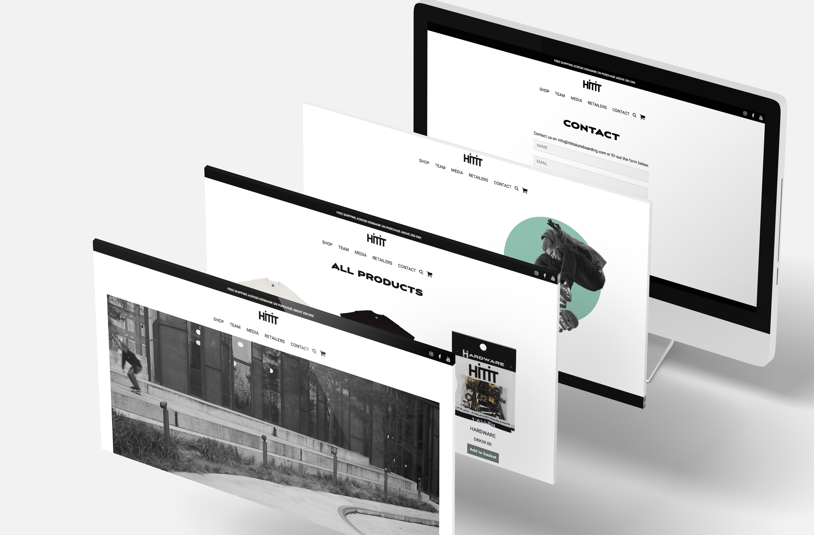

tema 05
indhold
I dette tema fik vi en grundlæggende forståelse for videoproduktion, herunder preproduktion, såsom at lave et story board, interviewguide, sørge for DSLR osv. Derudover fik vi også redskaberne til postproduktion af videomateriale. Vi lærte, at benytte smartphone kameraer til optagelse af video og ekstern lyd, samt at bruge Premiere Pro og Audition til redigering. Så blev vi også introduceret for de grundlæggende faglige begreber indenfor video og fotoproduktion, herunder 5-skuds reglen, tid og blænde på mobil, og filformater. Vi hørte også om, immaterielle rettigheder med udgangspunkt i ophavsretsloven og markedsføringsloven. Desuden benyttede vi os også af de færdigheder vi har fået fra de forrige temaer til at redesigne en virksomheds hjemmeside.
05.01.01 pilotprojekt
I denne opgave skulle vi to og to lave et interview og derefter klippe materialet sammen til en film på 1 minut. Filmen skulle handle om en person med en passion. Så skulle filmen indeholde b-rolls, hvor hovedpersonen foretager en handling, og den skulle starte med et establishment shot, samt en titel. Derudover skulle filmen indeholde min. 5 klip med min. 3 forskellige framings.
videoen
Her er det muligt at se videoen, hvor det er Andreas Klinge, der fortæller om sin passion for ski. Det kan ses, at vi har opnået kravene om 1 minuts længde, b-rolls, establishment shot osv.
problematikker
Der var ikke mange problemer under optagelserne, men til gengæld havde vi glemt en ordenlig mikrofon, og så kan man i den endelige video nemt se, at der var blevet brugt et telefonkamera til noget af optagelserne.
forbedringer
Hvis vi kunne filme om, så ville vi sørge for at have nogle gode mikrofoner og kamera, så kvaliteten havde været i top.
05.03.01 redesign og temadokumentation
Dette var den helt store opgave i dette tema. Her skulle vi skulle prøve kræfter med et redesign af en selvvalgt virksomheds website. Redsignet skulle munde i et kodet website og indeholde indholdsproduktion i form af tekst, foto og video. Derudover afleverede vi også et processdokument, der dokumenterede vores arbejdsprocess.
processen
Vi startede med en BERT undersøgelse for at finde ud af, hvad brugerne mente om den gamle hjemmeside. Vi lavede også en 5 sekunders test, der viste brugerens førstehåndsindtryk af siden. Herefter fandt vi ud af, hvor vi skulle lægge fokus, for at ændre folks opfattelse af siden til det bedre. Vi ville pifte siden op ved at ændre fotostilen for billederne. Til slut lavede vi igen en BERT, der viste, at vi forbedrede os i designet, der blev mere professionelt, siden inspirerede mere og blev mere kreativ. Så lavede vi endnu en 5 sekunders test, der viste, at vi opnåede vores ønske om at sætte mere fokus på logoets fremtræden.
forbedringer
Til vores feedback fandt vi ud af, at vores website ikke virkede på Chrome, grunden til dette er højst sandsynligt, at vi mangler display:flex; e. lign. på vores #images_container. Vi havde i stedet skrevet display:block ruby; hvilket Chrome ikke forstår. Så det er noget, jeg ville ændre som det første.
Vi nåede desværre heller ikke at kigge på at gøre hjemmesiden responsiv, hvilket er en vigtig del af opgaven, og specielt vigtig for virksomheden, da det er unge mennesker, der står bag, og det vil desuden også matche målgruppen, at der også er en mobil version.